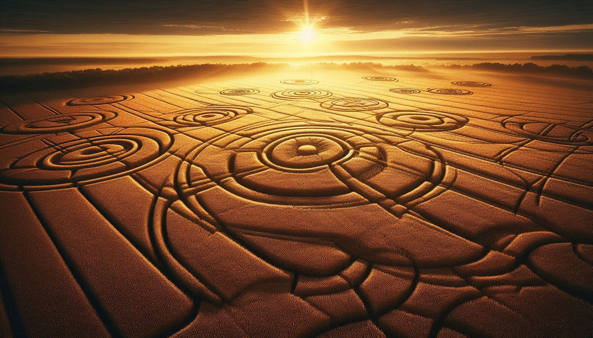
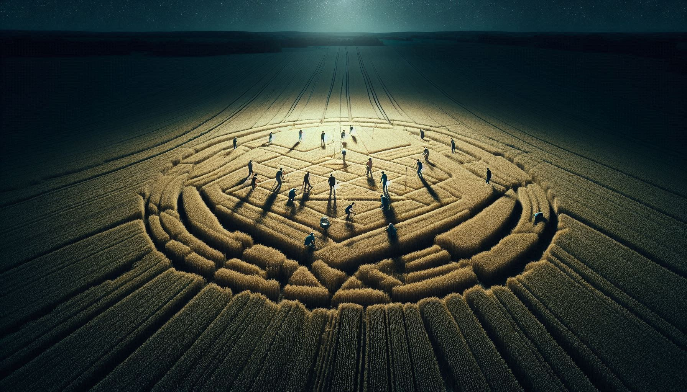

MATHEMATICAL ART OR ALIEN SIGNALS?

Crop Circles ennal vayalukalile (Gothambu, Nellu) vilakal korthu pidichu overnight undakkunna geometric designs aanu. 1970-ukal muthal aanu England-il ithu valareyadhikam report cheyyan thudangiyath.
2001-il Chilbolton Observatory-kku aduthu oru strange crop circle vannu. Ithu 1974-il manushyar space-ilekk ayacha Arecibo Message-inte thulyamaaya reply aayirunnu ennu pala researchers-um claim cheyyunnu.
Crop circles-ine kurichulla randu views thammil ulla vyathyasam:
| FEATURE | HUMAN MADE (PRANK) | GENUINE MYSTERY? |
|---|---|---|
| Stems | Stems break aakum (thadi odiyum). | Stems bend aakum, pakshe odilla (Heat expansion). |
| Radiation | Normal level radiation. | Strange isotopes and magnetic particles. |
| Speed | Hours edukkum. | Seconds-il forms cheyyunnathayi report. |

1991-il Doug Bower and Dave Chorley enna randu per paranjath avar 1978 muthal 250-ol crop circles verum "Planks and Ropes" (marathadiyum kayarum) upayogichu undakkiyathaanu ennanu. Ithoru valiya "Hoax" aayirunnu ennu chilar karuthunumpozhum, mattu chilar parayunnu complex designs avar cheyyan kazhiyilla enn.
Pala crop circle sighting-inu seshavum aalukal small Glowing Orbs (velichathinte panthukal) vayalukalil parakkunnathayi kaanarundu. Ithu crop-ine bend cheyyan upayogikkunna microwave energy aavam ennu chila researchers parayunnu.
Crop circles-il 90% manushyar undakkunnathaanu ennu prove cheythittundu. Pakshe baki ulla 10%... athinte perfection-um, athil ulla mathematical hidden codes-um ippozhum oru mystery aanu. Maybe it's a way for another world to say "Hello" without making a direct contact. 😌